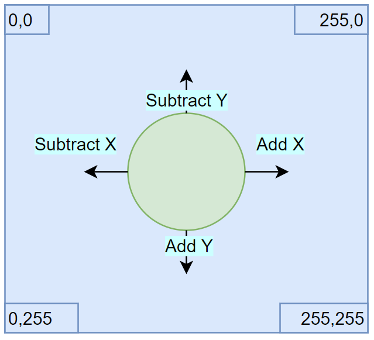

namespace Microsoft
Multiple items
type SampleGame =
inherit obj
new : unit -> SampleGame
override Draw : gameTime:'a -> 'b
override LoadContent : unit -> 'a
override Update : gameTime:'a -> 'b
Full name: MuckingAboutInMonoGame.SampleGame
--------------------
new : unit -> SampleGame
val g : SampleGame
module Unchecked
from Microsoft.FSharp.Core.Operators
val defaultof<'T> : 'T
Full name: Microsoft.FSharp.Core.Operators.Unchecked.defaultof
override SampleGame.LoadContent : unit -> 'a
Full name: MuckingAboutInMonoGame.SampleGame.LoadContent
override SampleGame.Update : gameTime:'a -> 'b
Full name: MuckingAboutInMonoGame.SampleGame.Update
override SampleGame.Draw : gameTime:'a -> 'b
Full name: MuckingAboutInMonoGame.SampleGame.Draw
Multiple items
type EntryPointAttribute =
inherit Attribute
new : unit -> EntryPointAttribute
Full name: Microsoft.FSharp.Core.EntryPointAttribute
--------------------
new : unit -> EntryPointAttribute
val main : argv:string [] -> int
Full name: MuckingAboutInMonoGame.main
val argv : string []
val game : SampleGame
val file : obj
Full name: MuckingAboutInMonoGame.file
val mutable _logo : obj
Full name: MuckingAboutInMonoGame._logo
type Sprite =
{texture: obj;
position: obj;
speed: float32;}
Full name: MuckingAboutInMonoGame.Sprite
Sprite.texture: obj
Sprite.position: obj
Sprite.speed: float32
Multiple items
val float32 : value:'T -> float32 (requires member op_Explicit)
Full name: Microsoft.FSharp.Core.Operators.float32
--------------------
type float32 = System.Single
Full name: Microsoft.FSharp.Core.float32
--------------------
type float32<'Measure> = float32
Full name: Microsoft.FSharp.Core.float32<_>
type 'T list = List<'T>
Full name: Microsoft.FSharp.Collections.list<_>
Multiple items
module List
from Microsoft.FSharp.Collections
--------------------
type List<'T> =
| ( [] )
| ( :: ) of Head: 'T * Tail: 'T list
interface IEnumerable
interface IEnumerable<'T>
member GetSlice : startIndex:int option * endIndex:int option -> 'T list
member Head : 'T
member IsEmpty : bool
member Item : index:int -> 'T with get
member Length : int
member Tail : 'T list
static member Cons : head:'T * tail:'T list -> 'T list
static member Empty : 'T list
Full name: Microsoft.FSharp.Collections.List<_>
val fold : folder:('State -> 'T -> 'State) -> state:'State -> list:'T list -> 'State
Full name: Microsoft.FSharp.Collections.List.fold
What is MonoGame?
- Open Source implementation of Microsoft's XNA Framework
- XNA was made to build Xbox 360 and Windows games in .Net
- Formed the basis of indie game development on Xbox 360
Cross Platform Support
MonoGame allows cross-platform game development, targeting:
Windows |
Linux |
MacOs |
iOs |
Android |
|
PS4 |
PS Vita |
|
Xbox One |
Nintendo Switch |
|
Aim For Today
Show a basic game using the MonoGame Framework with F#
Including:
- Implementing the core game loop (load, update, draw)
- Rendering an image to the screen
- Taking user input
- Translating that into movement
Stage 1: Bootstrapping
- In VS 2017 create a new F# Project (F# 4.1, .Net Framework 4.6.1)
- Install NuGet package
MonoGame.Framework.WindowsDX
- Open
Program.cs, we'll be adding all code in there
Import these namespaces:
1:
2:
3:
|
open Microsoft.Xna.Framework
open Microsoft.Xna.Framework.Graphics
open Microsoft.Xna.Framework.Input
|
We'll create the basic game class, containing the core game loop:
1:
2:
3:
4:
5:
6:
7:
8:
9:
10:
11:
|
type SampleGame () as g =
// Game is an XNA class that abstracts the common game loop away.
inherit Game()
// Responsible for initialising & controlling the presentation of the graphics
// Here we'll just use it to work out the resolution of the player's window
let _graphics = new GraphicsDeviceManager(g)
// SpriteBatch controls what is drawn to the screen
// We'll use this later to show our image
let mutable _spriteBatch = Unchecked.defaultof<SpriteBatch>
|
LoadContent is responsible for reading images, audio etc before the game starts
1:
2:
|
override g.LoadContent() =
_spriteBatch <- new SpriteBatch(g.GraphicsDevice)
|
Update is responsible for modifying any game state
For example if the player has pressed a key
Or if we need to change the position / speed of a character.
1:
2:
3:
|
override g.Update(gameTime) =
// Stop the game if the player presses escape
if Keyboard.GetState().IsKeyDown(Keys.Escape) then g.Exit();
|
Draw is responsible for outputting any images to the screen
1:
2:
3:
4:
5:
6:
7:
|
override g.Draw(gameTime) =
// Clear the screen with a lovely cornflower blue
g.GraphicsDevice.Clear(Color.CornflowerBlue);
_spriteBatch.Begin();
// Draw sprites here
_spriteBatch.End();
|
Initialise and run the game:
1:
2:
3:
4:
5:
|
[<EntryPoint>]
let main argv =
use game = new SampleGame()
game.Run()
0
|
Now when we launch it, we should get a nice background
Stage 2: Displaying Our Image
This is our character:
We need to add it to our project under Content/logo.png and set it to copy to our build directory.
We'll add a new field to store the logo in the SampleGame class:
1:
|
let mutable _logo = Unchecked.defaultof<Texture2D>
|
Under the LoadContent method, load the image into memory:
1:
2:
|
use file = new FileStream("Content/logo.png", FileMode.Open)
_logo <- Texture2D.FromStream(g.GraphicsDevice, file)
|
Under the Draw method, render the image:
1:
|
_spriteBatch.Draw(_logo, new Vector2(0.0f, 0.0f), Color.White)
|
Run the program to show our sprite.
Stage 3: Build Sprite Record
We want to be able to move our image around, so it makes sense to store both the image and it's position in the same type.
We also want our image to have a speed, determining how fast it will move.
Add this type to the module before SampleGame is declared:
1:
|
type Sprite = { texture: Texture2D; position: Vector2; speed: float32 }
|
Inside SampleGame add a new private method to abstract our loading logic:
1:
2:
3:
|
member private g.LoadImage(name) =
use file = new FileStream(name, FileMode.Open)
Texture2D.FromStream(g.GraphicsDevice, file)
|
Update our _logo field to:
1:
|
let mutable _logo = Unchecked.defaultof<Sprite>
|
Update LoadContent so _logo is set with:
1:
2:
3:
4:
5:
|
_logo <- {
texture = g.LoadImage("Content/logo.png")
position = Vector2(0.0f, 0.0f)
speed = 300.0f
}
|
Finally we'll update Draw to use the new vector property:
1:
|
_spriteBatch.Draw(_logo.texture, _logo.position, Color.White)
|
Stage 4: Add Movement
Our image isn't particularly interesting yet, so let's allow our player to move it around.
Movement == Changing the vector / position of the image

Let's extend our domain to cover the types of movement we're interested in.
1:
2:
3:
4:
5:
6:
7:
8:
9:
10:
|
type Adjustment = Add | Subtract
type Dimension = X | Y
type Movement = Keys * Adjustment * Dimension
let possibleMoves : Movement list = [
Keys.Up, Subtract, Y
Keys.Down, Add, Y
Keys.Left, Subtract, X
Keys.Right, Add, X
]
|
We now need a way of translating a key press into a movement of the images position.
1:
2:
3:
4:
5:
6:
7:
8:
9:
10:
11:
12:
13:
14:
15:
|
let Move (gameTime: GameTime)
(sprite: Sprite)
(kstate: KeyboardState): Sprite =
let elapsedTime = (gameTime.ElapsedGameTime.TotalSeconds |> float32)
let AdjustPosition (position: Vector2) (key, adjustment, dimension) =
if kstate.IsKeyDown(key)
then
let amountMoved = sprite.speed * elapsedTime
match (adjustment, dimension) with
| (Add, Y) -> Vector2(position.X, position.Y + amountMoved )
| (Subtract, Y) -> Vector2(position.X, position.Y - amountMoved )
| (Add, X) -> Vector2(position.X + amountMoved, position.Y)
| (Subtract, X) -> Vector2(position.X - amountMoved, position.Y)
else position
|
AdjustPosition can then be applied to each possible move in the Move function.
1:
2:
3:
4:
5:
6:
|
// Starting with our current position
// Take every possible move and apply it to our position
let updatedPosition = possibleMoves |> List.fold AdjustPosition sprite.position
// Apply the updated position to the sprite
{ sprite with position=updatedPosition }
|
Change the Update function so logo is set as:
1:
|
_logo <- (Move gameTime _logo (Keyboard.GetState()))
|
Run the game again
Stage 5: Stop at Borders
We need to modify our logic so if the player hits the borders, the image stops
Add a new function above Move:
1:
2:
3:
4:
5:
6:
7:
8:
9:
10:
|
let StopAtBorders (graphics: GraphicsDeviceManager) (sprite: Sprite): Sprite =
let maxWidth =
graphics.PreferredBackBufferWidth - sprite.texture.Width |> float32
let maxHeight =
graphics.PreferredBackBufferHeight - sprite.texture.Height |> float32
let x = Math.Min(Math.Max(0.0f, sprite.position.X), maxWidth);
let y= Math.Min(Math.Max(0.0f, sprite.position.Y), maxHeight);
{sprite with position = Vector2(x, y)}
|
Update the Move function to take a new parameter:
1:
2:
3:
4:
|
let Move (gameTime: GameTime)
(sprite: Sprite)
(kstate: KeyboardState)
(graphics: GraphicsDeviceManager): Sprite =
|
In the Move function add this last pipe forward operator:
1:
2:
|
{ sprite with position=updatedPosition }
|> StopAtBorders graphics
|
Finally, modify the Update method to pass in the new parameter:
1:
|
_logo <- (Move gameTime _logo (Keyboard.GetState()) _graphics)
|
Run the game again